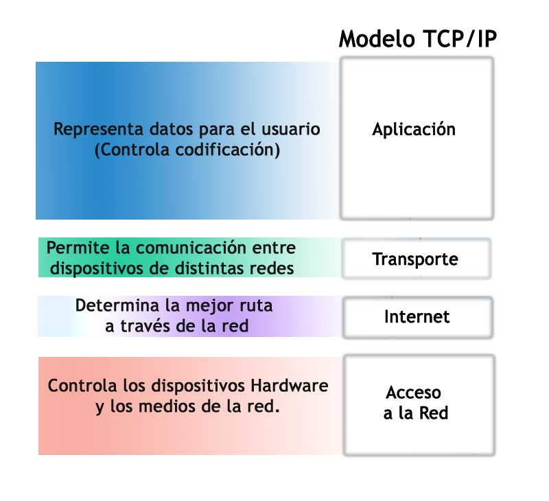

Modelo de redes lineal

Un modelo de red es un modelo de transbordo con capacidades. Al reconocer que un problema puede formularse como algún modelo de redUna red es una gráfica que presenta algún tipo de flujo en sus ramales.
El modelo de bases de datos de red se utiliza cuando se requiere una relación más flexible que en el modelo jerárquico, entre los distintos registros de una base de datos.
- 7 - Red de area personal: es una red de computadoras para la comunicación entre distintos dispositivos
- 6 - Red de area local: es una red que se limita a un área especial relativamente pequeña tal como un cuarto, un solo edificio, una nave, o un avión.
- 5 - Red de area de campus: red de computadoras de alta velocidad que conecta redes de área local a través de un área geográfica limitada, como un campus universitario, una base militar, hospital, etc. Tampoco utiliza medios públicos para la interconexión.
- 4 - Red de area metropolitana: es una red de alta velocidad que da cobertura en un área geográfica extensa, proporcionando capacidad de integración de múltiples servicios mediante la transmisión de datos, voz y vídeo, sobre medios de transmisión tales como fibra óptica y par trenzado.
Funcionamiento
El modelo de redes da un conjunto de protocolos de red particular. Por ejemplo, el conjunto de protocolos OSI implementa siete capas y se agrega una octava capa.
Modelo de red debe cumplir 4 características básicas.

El modelo de comunicaciones de red ideales con una familia de protocolos.combina varias capasno utiliza determinadas capas.
Diseño de red
- 4 - Aplicación: industria, educación,hogar salud, comercio etc.
- 3 - Trasporte: flujo de datos a travez de conductores opticos y de cobre
- 2 - Internet: IPv4, IPv6, ARP, ICMP